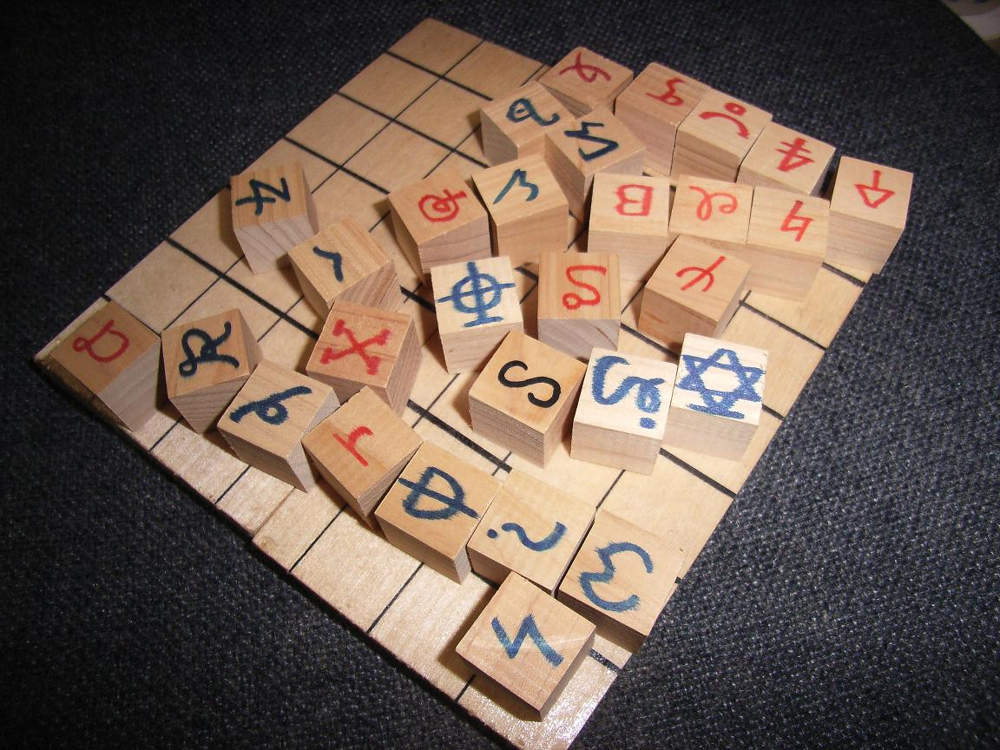
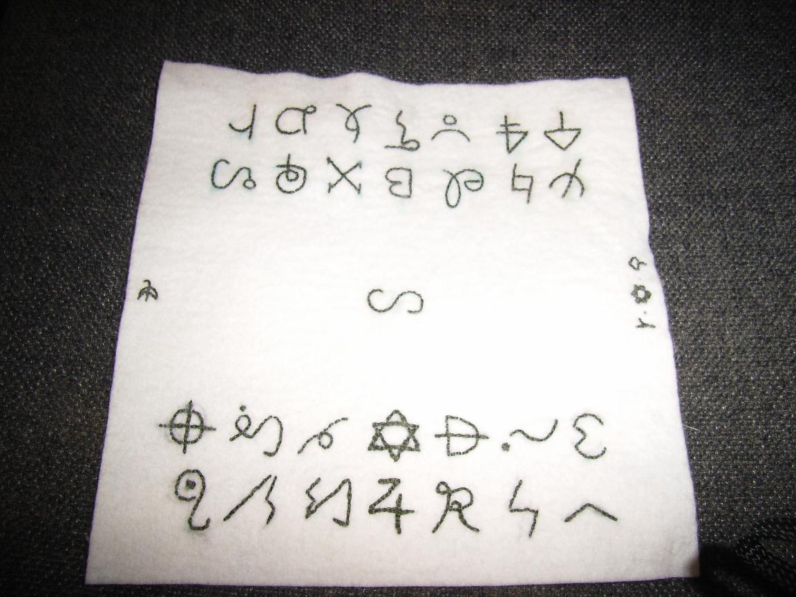
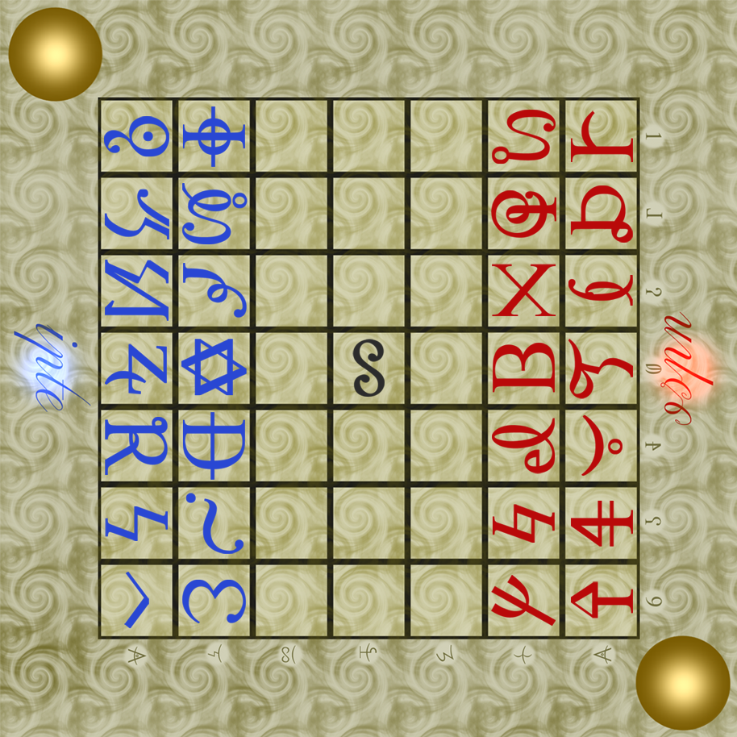
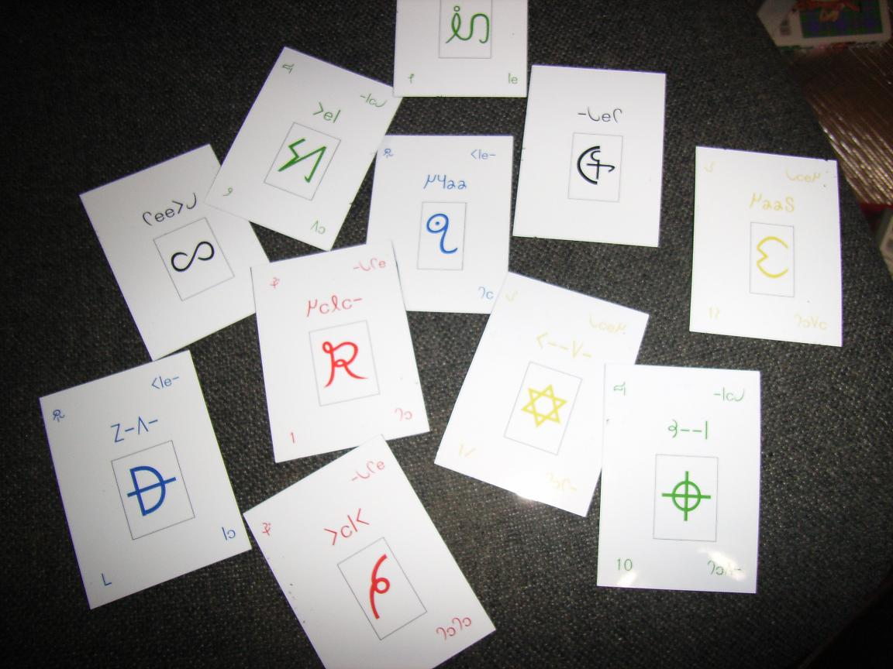
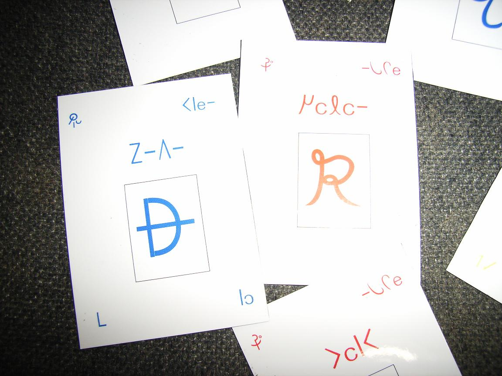

|
ゲーム
●シェルト板(2003?)
アルカの将棋、シェルトです。

●シェルト埃避け(2004?)
シェルト板にかぶせる埃避けの布です。
ただの埃避けではなく、駒の初期配置が刺繍してあり、使う人のことが考えられています。
刺繍ができるとは、さすが女性は手先が器用ですね。

●xcf版シェルト板(2011)
gimpで開くことのできるシェルト板です。
レイヤーを操作することで駒を動かすことができます。
DLはこちらから。
外見は下記のようになっています。

Created by lem erfi
●カルシェ(2005?)
アルカのトランプです。
ridia～ruujまでの13枚のカードが四季分揃っています。
上段は四季で、中段はランティス名で、下段は使徒番号です。
合計54枚ですので、トランプと同じ遊び方ができます。
夏が青なのは一見不思議ですが、これは制アルカ時代のn対語の影響です。


|